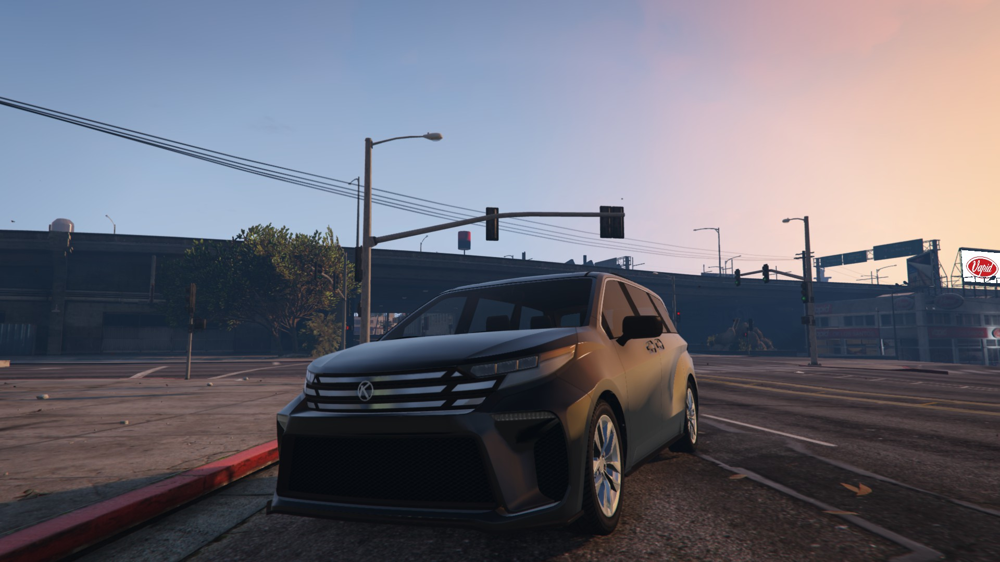
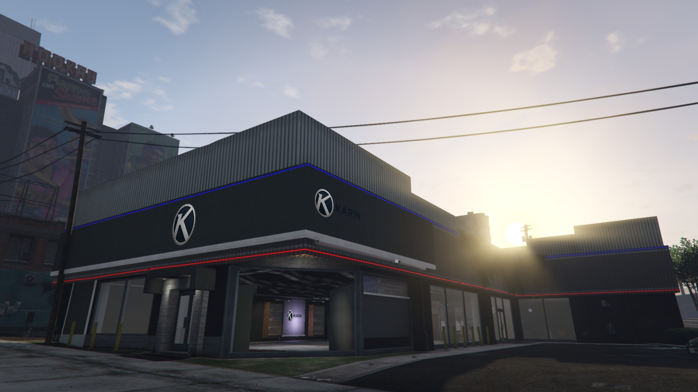

ABOUT US
KARIN MOTORS는 일본 기술 기반의 고성능 차량 브랜드 KARIN의 공식 딜러로, 로스 산토스에 입점한 단독 대리점입니다. KARIN이 추구하는 퍼포먼스 감성과 철학을 고객에게 전달하고, 전문적인 차량 상담과 브랜드 체험을 제공합니다.
VEHICLES
S95 – 박서 엔진 기반 퍼포먼스 쿠페

컴팩트한 차체에 박서 엔진을 탑재한 S95는 고회전 영역에서도 안정적인 출력을 유지하며, 짧은 휠베이스와 낮은 무게중심으로 민첩한 코너링 성능을 자랑합니다. 도시 주행부터 와인딩 로드까지, 드라이빙의 재미를 선사하는 진정한 퍼포먼스 쿠페입니다.
Everon RS – 고출력 오프로드 스포츠 트럭

Everon RS는 KARIN의 기술력이 집약된 하이엔드 오프로드 스포츠 트럭으로, 강인한 오프로드 서스펜션과 견고한 차체, 넉넉한 지상고를 기반으로 극한의 지형을 정복할 수 있도록 설계되었습니다. 거친 남부 산악지대, 사막지형, 바위길, 모래언덕에서도 놀라운 접지력과 출력을 제공하며 로스 산토스 힐 파워 스트리트 (구 프리미엄 모터스) 지점에서 직접 만나볼 수 있습니다.
Asterope RS – 실용성과 퍼포먼스를 겸비한 고성능 세단

넉넉한 실내 공간과 세련된 외관을 갖춘 Asterope RS는, 일상적인 주행에서도 스포티함을 잃지 않는 고성능 세단입니다. 3.5리터 V6 엔진과 민첩한 핸들링, 고급스러운 승차감이 조화를 이루며, 여유로운 가족용 세단의 성능과 드라이버 중심의 퍼포먼스를 동시에 만족시키는 모델입니다.
Vivanite – 전륜 기반 다인승 컴팩트 RV
Vivanite는 KARIN이 새롭게 선보이는 전륜 구동 기반의 컴팩트 RV로, 실용성과 스타일을 모두 갖춘 스마트한 일상형 차량입니다. 다인승 탑승과 실용성을 중심으로 설계된 만큼, 도시 생활과 패밀리 드라이빙 모두를 만족시키는 모델입니다. 감각적인 전면부 디자인과 유려한 바디라인은 도시적인 세련미를 강조하며, 넉넉한 실내공간과 정숙한 승차감은 운전자 중심의 편의를 최우선으로 고려한 결과입니다.
STORE MANAGER

Dobi_Jeon | KARIN MOTORS 지점장은 로스 산토스 남부 지역에서 활동하며, 정비 기술과 퍼포먼스 튜닝에 있어 깊은 이해와 경험을 바탕으로 커뮤니티에서 인정받은 전문가입니다. 이전에는 코빙턴 정비소에서 활동하며 로컬 레이싱팀과의 협업도 이어왔고, KARIN 본사에 의해 스카웃되어 현재는 공식 지점장으로서 고객 맞춤형 상담과 브랜드 가치를 전달하는 핵심 인물로 활약 중입니다. 합리적인 조율과 날카로운 판단력을 겸비한 그는 KARIN 브랜드의 철학을 누구보다 현실감 있게 구현하는 리더입니다.
LOCATION
로스 산토스, 필박스 힐 파워 스트리트 (구 프리미엄 모터스)
CONTACT
☎️ 2711
💬 Discord: discord.gg/kmwAu92vec